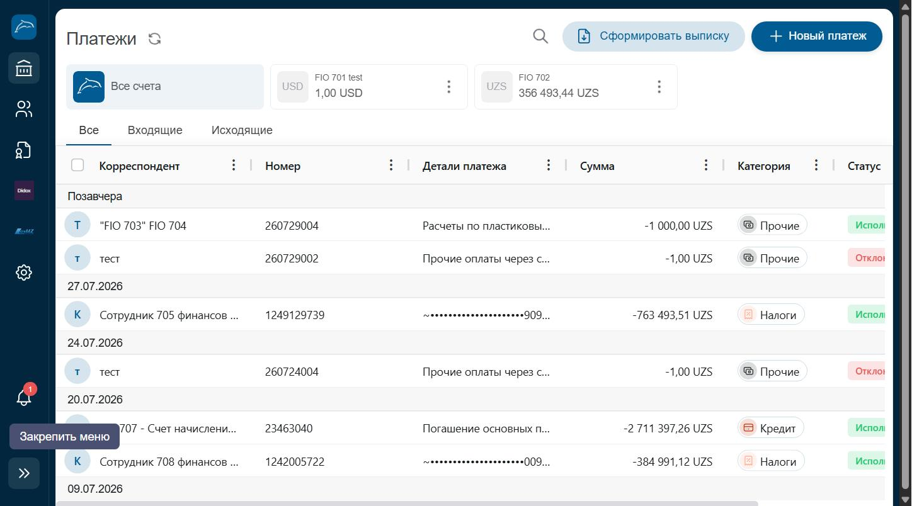

Платежи
Полный список входящих и исходящих операций по всем счетам компании с фильтрами, поиском и выпиской.
Где находитсяПункт «Платежи» в разделе «Банк» бокового меню, группа «Счета».

Нажмите на изображение, чтобы увеличить его.
Из чего состоит страница
- 1Переключатель счетовКнопка «Все счета» и отдельные карточки по каждому счёту (USD, UZS) позволяют фильтровать платежи по конкретному счёту.
- 2Вкладки Все / Входящие / ИсходящиеПереключают отображаемый список платежей по направлению операции.
- 3ПоискИконка лупы в правом верхнем углу открывает строку поиска по корреспонденту, номеру или сумме.
- 4Сформировать выпискуКнопка формирует и позволяет скачать банковскую выписку за выбранный период.
- 5Новый платежОткрывает модальное окно выбора типа платежа (см. статью «Новый платеж»).
- 6Таблица платежейСгруппирована по датам. Столбцы: Корреспондент, Номер документа, Детали платежа, Сумма, Категория, Статус (Исполнен / Отклонен и т.д.).
Пошагово
- Откройте пункт «Платежи» в разделе «Банк».
- Выберите нужный счёт или оставьте «Все счета».
- Переключитесь между вкладками «Входящие» и «Исходящие», если нужно отфильтровать по направлению.
- Используйте поиск, чтобы найти конкретный платеж по номеру или названию корреспондента.
- Нажмите на строку платежа, чтобы открыть подробности документа.
СоветДля бухгалтерской отчётности используйте кнопку «Сформировать выписку» — она формирует официальный документ движения средств за период.
ВажноОтменить или изменить уже исполненный платеж через эту страницу нельзя — операция доступна только для просмотра истории.